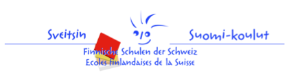

Annamme kerran viikossa täydentävää opetusta suomen kielessä ja kulttuurissa, tavoitteenamme puhe- ja viestintätaitojen sekä kirjallisen ilmaisun parantaminen ja sanavaraston kartuttaminen. Näiltä sivuilta löytyy yleistietoa koulumme toiminnasta, opetusryhmistämme ja tapahtumistamme. Lisäksi tarjoamme tietoa ja vinkkejä suomen kielen kehityksen tukemiseen niin kotona kuin Suomi-koulussakin.
Opetus on suunnattu pääasiallisesti kaksi- ja monikielisille lapsille ja nuorille sekä väliaikaisesti ulkomailla asuville suomalaislapsille. Koulumme ei toimi vain Baselin alueen suomalaisia varten, vaan opetukseen osallistuu lapsia myös Ranskan ja Saksan puolelta. Alueen suomalaisyhteisö on aktiivinen ja innostunut välittämään lapsille suomen kieltä ja kulttuuria monipuolisesti. Suomen kieli nähdään tärkeäksi osaksi ulkosuomalaisten lasten kulttuuri-identiteetin muodostumista. Koulussamme on tällä hetkellä noin 40 koululaista sekä 15 taaperoryhmäläistä.
Koulumme esiintyy 22.4.2016 ilmestyneessä Opettaja-lehdessä:
http://www.opettaja.fi/cs/opettaja/jutut&juttuID=1408913978706 (rullaa sivua alaspäin).
Tervetuloa mukaan toimintaamme!
